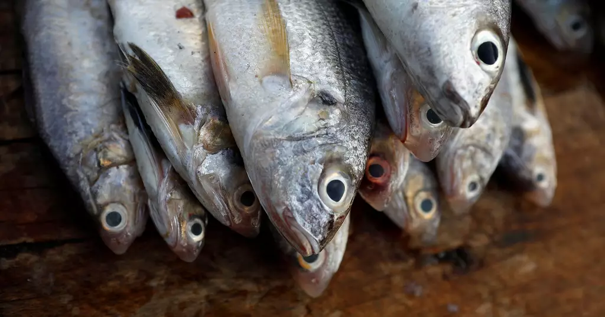

Overhaulling of fish causing near extinction in some species
This is a non-profit organisation focused on spreading awareness for our luscious oceans that are being tampered with in tourturous ways. We decided to work with many other organisations that have supported and collaborated in our community efforts. Our organisation has helped over 50 developed and developing countries become more ocean friendly and can now have thriving aquatic ecosystems. If we are able to make such a difference in such short amounts of time, we may be able to overcome what we call the Oceanic Crises we face today.
Overfishing in the Pacific has been a problem for many years and is becoming an increasingly bad situation. What happens is that fishing industries use fishing nets with massive weights dragging it across the ocean for profit. Of course this process is very efficient compared to say spearfishing but the environmental damages this has caused is unimaginable.
On the floor, sea beds have been ruined, seaweed, kelp and mollusks have been demolished and ripped from the ground. In the water itself, not just the fish people want to catch but creatures such as sharks and many other fish are caught up in the net and then killed because they are considered “useless” to the greedy fishermen.
The most common fish that is being overfished in the pacific ocean is tuna. Many different types of tuna exist, however, no matter the species, their meat is considered to be nutrient and protein rich and filled with omega-3, the key ingredient to make cell walls in the human body and keeping the blood healthy. So the meat is nutrient rich, but it is also very tasty. Tuna can be found in cans, on sushi or eaten raw, it can be gourmet or cheap, no matter the way it's eaten, it is a very vercitile and tasty food item.
Due to this chaotic overfishing crisis, the amount of tuna in the sea has drastically decreased within the past 50 years. According to